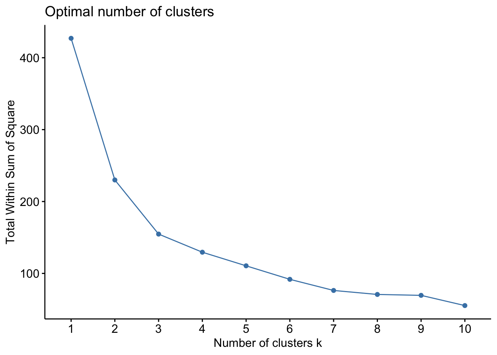
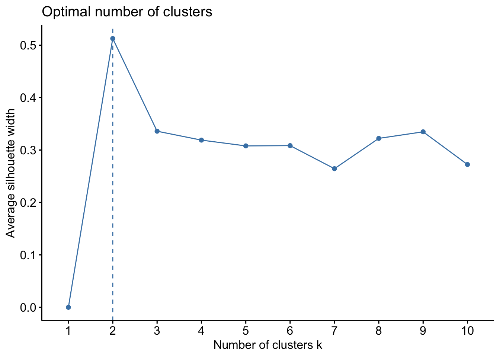
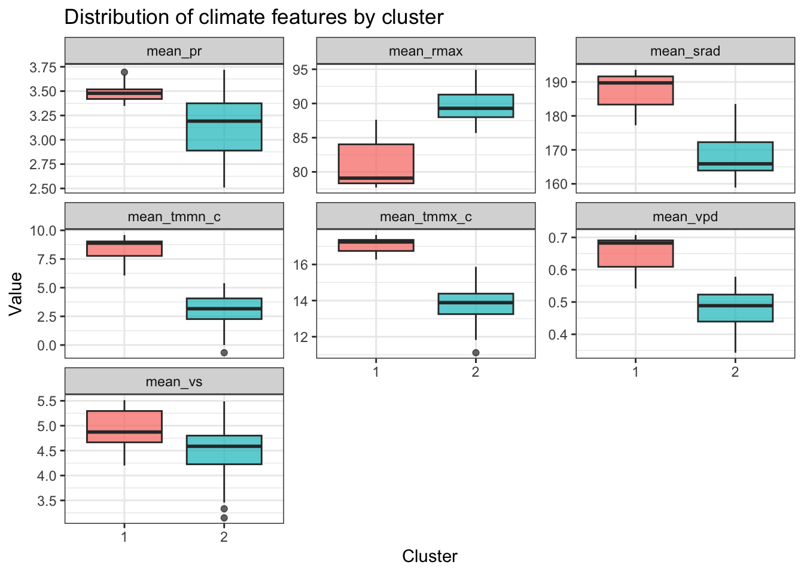
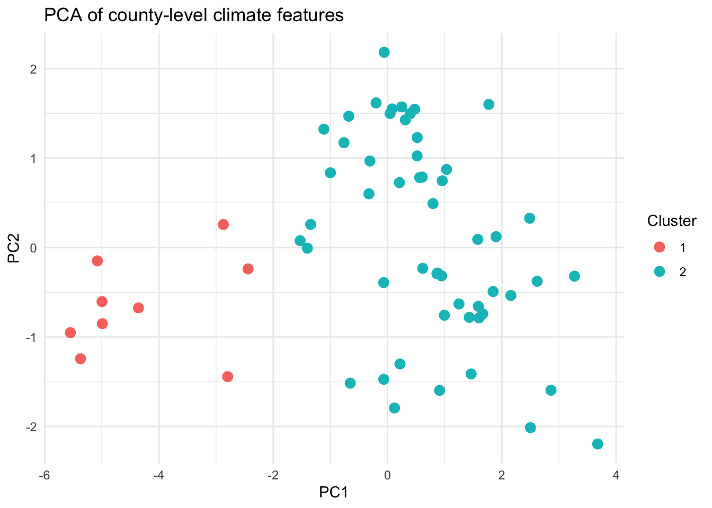
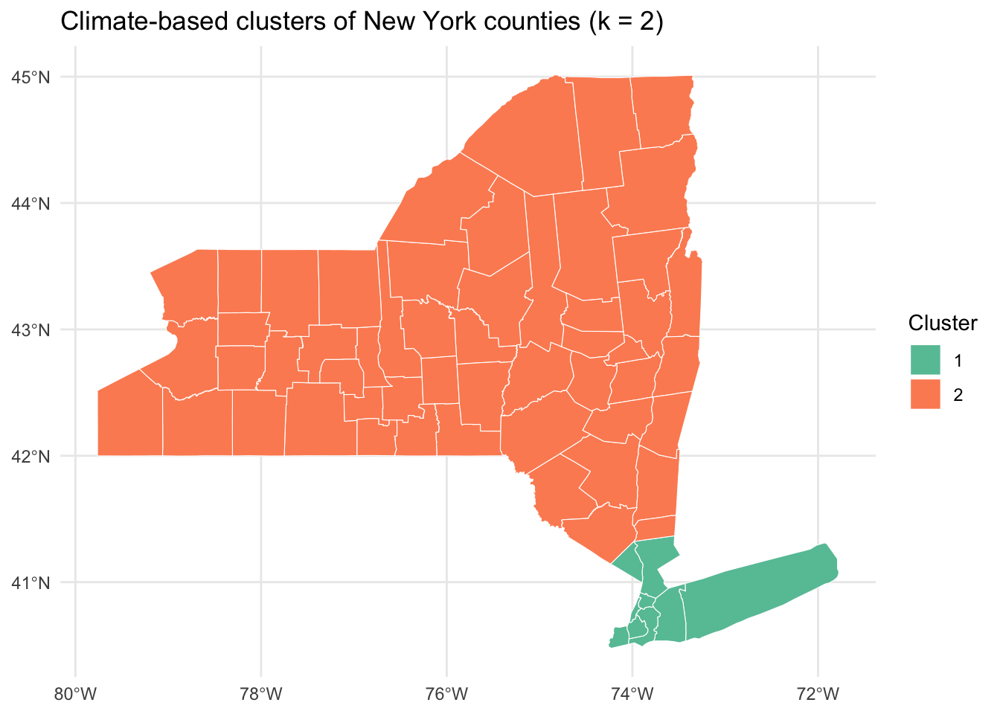

knitr::opts_chunk$set(message = FALSE, warning = FALSE)
library(dplyr)
library(lubridate)
library(sf)
library(tidyverse)
library(factoextra)
library(ggplot2)
county_fips_df <- st_read("df_gen/data/NYcounty_fips", quiet = TRUE)
weather <- read.csv("df_gen/data/meteor_2016to20_NY.csv")weather2 <- weather |>
mutate(
tmmx_c = tmmx - 273.15,
tmmn_c = tmmn - 273.15,
year = year(date),
month = month(date)
)
county_feat <- weather2 |>
group_by(county) |>
summarise(
mean_tmmx_c = mean(tmmx_c, na.rm = TRUE),
mean_tmmn_c = mean(tmmn_c, na.rm = TRUE),
mean_rmax = mean(rmax, na.rm = TRUE),
mean_vpd = mean(vpd, na.rm = TRUE),
mean_pr = mean(pr, na.rm = TRUE),
mean_srad = mean(srad, na.rm = TRUE),
mean_vs = mean(vs, na.rm = TRUE),
.groups = "drop"
)We summarized daily meteorological records from 2016–2020 into county-level “climate profiles.” For each county, we computed long-term averages of maximum and minimum temperature, maximum relative humidity, vapor pressure deficit, precipitation, solar radiation, and wind speed. This aggregation yields one observation per county representing its typical climate over the study period.
feat_mat <- county_feat |>
select(-county) |>
scale() |>
as.matrix()Before clustering, all continuous features were standardized to mean 0 and unit variance so that no single variable dominated the distance calculations in k-means.
set.seed(123)
fviz_nbclust(feat_mat, kmeans, method = "wss")
fviz_nbclust(feat_mat, kmeans, method = "silhouette")
We chose k=2 based on both the elbow and silhouette criteria. In the WSS (elbow) plot, the largest drop occurs between k=1 and k=2/3, and the curve flattens after k=2, indicating limited gain from additional clusters. The average silhouette width is highest at k=2, suggesting that two clusters provide the best separation and cohesion.
library(gt)
cluster_table <- cluster_summary |>
mutate(
cluster = if_else(cluster == 1, "Cluster 1", "Cluster 2")
) |>
gt(rowname_col = "cluster") |>
tab_header(
title = md("**Climate characteristics by cluster**")
) |>
cols_label(
n_counties = "n",
mean_tmmx_c = "Mean tmmx (°C)",
mean_tmmn_c = "Mean tmmn (°C)",
mean_rmax = "Mean rmax (%)",
mean_vpd = "Mean VPD (kPa)",
mean_pr = "Mean precip (mm)",
mean_srad = "Mean srad (W/m²)",
mean_vs = "Mean wind (m/s)"
) |>
fmt_number(
columns = c(mean_tmmx_c:mean_vs),
decimals = 2
) |>
tab_options(
table.font.size = px(14),
data_row.padding = px(4)
)
cluster_table| Climate characteristics by cluster | ||||||||
| n | Mean tmmx (°C) | Mean tmmn (°C) | Mean rmax (%) | Mean VPD (kPa) | Mean precip (mm) | Mean srad (W/m²) | Mean wind (m/s) | |
|---|---|---|---|---|---|---|---|---|
| Cluster 1 | 9 | 17.02 | 8.37 | 81.06 | 0.65 | 3.49 | 187.13 | 4.88 |
| Cluster 2 | 53 | 13.77 | 3.00 | 89.54 | 0.48 | 3.14 | 168.02 | 4.49 |
We identified two clusters of New York counties based on their 2016–2020 average meteorological profiles.
Cluster 1 (n = 9) exhibits warmer and sunnier conditions, with higher mean daily maximum and minimum temperature (approximately 17.0°C and 8.4°C) compared with Cluster 2 (13.8°C and 3.0°C).
Cluster 1 also has lower maximum relative humidity and higher vapor pressure deficit, indicating relatively drier air, alongside slightly higher precipitation, stronger solar radiation, and higher wind speed.
Cluster 2 (n = 53), which contains most counties, is characterized by cooler temperatures, higher humidity, lower solar radiation, and slightly weaker winds.
Thus, Cluster 1 can be interpreted as a “warmer, sunnier, relatively drier” climate type, whereas Cluster 2 represents a “cooler, more humid” climate type.
From the perspective of these data, PCA is useful because there are many correlated climate features at the county level.
Considering all seven variables separately makes it difficult to see the overall structure of the data or to understand how the k-means clusters differ in the multivariate space.
PCA provides a set of uncorrelated components that summarize the main gradients of climate variation, allowing us to visualize the data in only two dimensions.
We focus on PC1 and PC2 because they explain the largest share of total variance and therefore capture the most important patterns in the climate features.
PC1 (horizontal axis) represents the primary gradient of climate variation. Counties in Cluster 1 and Cluster 2 fall on opposite sides, so PC1 separates warmer, sunnier, relatively drier counties from cooler, more humid counties.
PC2 (vertical axis) captures additional variation not explained by PC1, such as smaller differences in humidity, precipitation, radiation, and wind speed, and helps show within-cluster heterogeneity.
After choosing k=2, we used three complementary plots to evaluate whether the clusters are meaningful and how they differ:
How do the original climate variables differ by cluster?
Do the clusters separate well in the multivariate feature space?
How are the clusters distributed geographically across New York State?
plot_data <- county_cluster |>
select(county, cluster, mean_tmmx_c:mean_vs) |>
pivot_longer(
cols = -c(county, cluster),
names_to = "variable",
values_to = "value"
)
ggplot(plot_data, aes(x = cluster, y = value, fill = cluster)) +
geom_boxplot(alpha = 0.7) +
facet_wrap(~ variable, scales = "free_y") +
theme_bw() +
labs(
x = "Cluster",
y = "Value",
title = "Distribution of climate features by cluster"
) +
theme(legend.position = "none")
The faceted boxplots show the distribution of each county-level climate feature by cluster.
They highlight that Cluster 1 counties tend to have higher mean maximum and minimum temperatures, higher solar radiation and wind speed, slightly higher precipitation, lower maximum relative humidity, and higher vapor pressure deficit than Cluster 2, making the “warm, sunny, relatively dry” vs “cooler, more humid” contrast clear on the original scale of the variables.
pca_fit <- prcomp(feat_mat, center = FALSE, scale. = FALSE)
pca_df <- as.data.frame(pca_fit$x[, 1:2]) |>
mutate(
county = county_feat$county,
cluster = county_cluster$cluster
)
ggplot(pca_df, aes(x = PC1, y = PC2, color = cluster)) +
geom_point(size = 3) +
theme_minimal() +
labs(
title = "PCA of county-level climate features",
x = "PC1",
y = "PC2",
color = "Cluster"
)
The PCA plot projects all standardized features onto the first two principal components and colors points by cluster.
Cluster 1 counties cluster together on one side of the PC1 axis, while Cluster 2 counties occupy a separate region, indicating that the two clusters are well separated in the reduced multivariate climate space.
county_cluster2 <- county_cluster |>
mutate(fips = as.character(county))
ny_sf2 <- county_fips_df |>
mutate(fips = as.character(fips))
ny_map <- ny_sf2 |>
left_join(county_cluster2, by = "fips")
ggplot(ny_map) +
geom_sf(aes(fill = cluster), color = "white", size = 0.2) +
scale_fill_brewer(palette = "Set2", name = "Cluster") +
theme_minimal() +
labs(
title = "Climate-based clusters of New York counties (k = 2)"
)
The choropleth map joins cluster labels to the county shapefile and shows that Cluster 1 counties are concentrated in the downstate/NYC and Long Island region, whereas most upstate and interior counties belong to Cluster 2.
This confirms that the climate-based clusters also align with intuitive coastal vs inland geographic patterns.
Combining k-means clustering with PCA and spatial visualization demonstrates that New York counties can be grouped into two distinct climate types.
The first cluster represents warmer, sunnier, relatively drier coastal counties, while the second cluster captures cooler, more humid interior counties.
These patterns are consistent across the original climate features, the low-dimensional PCA representation, and the geographic distribution.